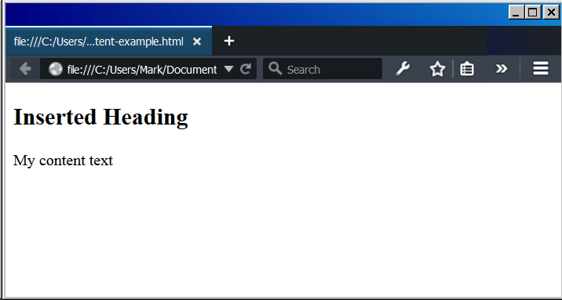

The <content> HTML element—an obsolete part of the Web Components suite of technologies—was used inside of Shadow DOM as an {{glossary("insertion point")}}, and wasn't meant to be used in ordinary HTML. It has now been replaced by the {{HTMLElement("slot")}} element, which creates a point in the DOM at which a shadow DOM can be inserted.
Note: Though present in early draft of the specifications and implemented in several browsers, this element has been removed in later versions of the spec, and should not be used. It is documented here to assist in adapting code written during the time it was included in the spec to work with newer versions of the specification.
| Content categories | Transparent content. |
|---|---|
| Permitted content | Flow content. |
| Tag omission | {{no_tag_omission}} |
| Permitted parent elements | Any element that accepts flow content. |
| DOM interface | {{domxref("HTMLContentElement")}} |
This element includes the global attributes.
select<content> element.Here is a simple example of using the <content> element. It is an HTML file with everything needed in it.
Note: For this code to work, the browser you display it in must support Web Components. See Enabling Web Components in Firefox.
<html>
<head></head>
<body>
<!-- The original content accessed by <content> -->
<div>
<h4>My Content Heading</h4>
<p>My content text</p>
</div>
<script>
// Get the <div> above.
var myContent = document.querySelector('div');
// Create a shadow DOM on the <div>
var shadowroot = myContent.createShadowRoot();
// Insert into the shadow DOM a new heading and
// part of the original content: the <p> tag.
shadowroot.innerHTML =
'<h2>Inserted Heading</h2> <content select="p"></content>';
</script>
</body>
</html>
If you display this in a web browser it should look like the following.

This element is no longer defined by any specifications.
{{Compat}}